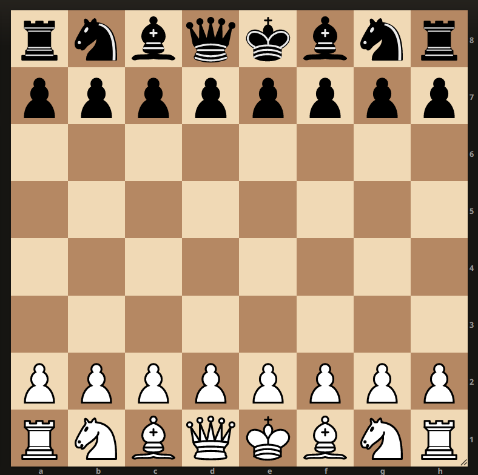

Najważniejsze porady
- Zapamiętaj sposoby przemieszczania się każdej figury.
- Analizuj swoje partie za pomocą silnika szachowego.
- Przewiduj ruchy przeciwnika, każdy ruch ma jakiś zamiar.
- Opanuj na początku partii środek szachownicy.
- Zadbaj o szybkie rozwinięcie figur lekkich.
- Nie używaj hetmana zbyt szybko, gdyż jest łatwym celem.
- Angażuj króla do wykonania ruszady, by go zabezpieczyć.
- Nie przejmuj się porażkami, są one konieczne do lepszej gry.
- Indyjsko-królewska obrona jest jednym z najlepszych otwarć szachowych.
- Ewidentnie zapamiętaj dane z tabeli, ułatwiające podejmowanie decyzji.

| Figura |
Wartość |
Ilość |
| Król |
Bezcenny |
1 |
| Hetman |
9 |
1 |
| Wieża |
5 |
2 |
| Goniec |
3 |
2 |
| Skoczek |
3 |
2 |
| Pionek |
1 |
8 |